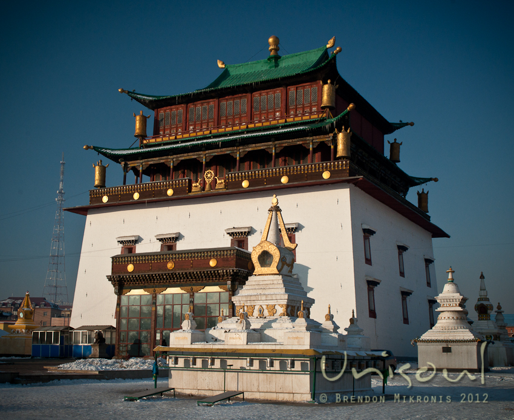

Religion
Interest in Buddhism as a national religion began with Chinggis Khan. He employed the Buddhist Uigur people as a teachers and state officials. The Uigur were a respected people and had great cultural influence over the Mongols. Chinggis Khan also held meetings with Buddhist leaders during his reign. In his will, he instructed his successor, Ogedei Khan to invite a Tibetan lama to conduct Buddhist services at Kharakhorum. This engaged practicing Shamans in Kharakhorum, as pantheistic Shamanism was the traditional faith of the Mongols.
Buddhism was not fully adopted as a state religion until the rule of Kubila Khan. He declared Buddhism to be the Yuan empire's official religion. Kubila Khan appointed the lama Lodijaltsan as spiritual leader and state teacher for the country. Lamas were officially exempted from military service and paying taxes. Despite these efforts by Kubila Khan, Buddhism did not become a widely-accepted religion in Mongolia. It was the religion of the aristocracy, and following the Tibetan empire's downfall, Buddhism lost its support and Shamanism was revived through to the mid sixteenth century.
In the second half of the sixteenth century, Yellow Hat sect Buddhism or Lamaism became prominent in Mongolia. Lamaism was adopted for political as well as social reasons. Politically, Lamaism was favoured because (1) Mongol aristocrats wanted their positions reinforced by religious figures, (2) Tibetan Yellow Hat proponents sought allies among the Mongol rulers against the Red Hat sect, and (3) the Ming empire in China saw Lamaism as a means of pacifying their warlike Mongol neighbours.
In 1577, Altan Khan invited the religious head of Tibet to Mongolia, as Altan Khan was intent upon unifying Mongolia under Lamaism. Altan Khan incorporated Buddhist beliefs into laws which made for a legal basis to abolish the practices of Shamanism. Altan Khan's campaign was continued by Avtai Sain Khan, who met with the third Dalai Lama in 1586. At this meeting, it was decided that the Zuu temple in Kharakhorum would be established as the Mongol Centre of Lamaism. Soon thereafter, the other monasteries and schools for Lamaism opened under the directive of Zanabazar, the head of the Lamaist religion in Mongolia. Zanabazar worked diligently to spread Lamaism to all people, nobles and commoners alike. Lamaism continued to gain popularity for the following 200 years, or until the Mongol People's Revolution.
During the period referred to as the "Left Deviation" (1929-1932) approximately 300 monasteries were closed in an effort to increase Mongolia's workforce by encouraging lamas to work outside of the monasteries. Some lamas left in fear of persecution, only to return to the monasteries in 1932, the beginning of the New Turn movement: a movement in which efforts were directed towards persuasion, education and propaganda. By 1936 there were 767 monasteries - including more than 300 closed during 1929-1932 - and over 100,000 lamas, including an increase of 10,000 during the period immediately following the Left Deviation. At this time, the adult lamas represented over forty percent of the adult male population - a problem for a socialist country.
In the mid 1930s, the communist party implemented the "liquidation of the church as an organisation" due, in part, to rumours of the political uprisings against the government being rooted in the monasteries. At this time, lamas were 'strongly encouraged' to leave the monasteries and begin secular lifestyles. By 1938, approximately 20,000 of the lamas had become herders, 5,000 were organised into government cooperatives, young lamas were enlisted in the military and child lamas were returned to their families. And the rest? Many were victims of the burning and bombing of monasteries during the mid 1930s. 1937 is said to be one of the worst years in Mongol history, as hundreds of monasteries were destroyed, tens of thousands of Buddhist books were burned, and most of the 100,000 lamas were persuaded into secular lifestyles or killed.
Over the next 40 years, Mongols worshipped in fear. Older Buddhists continued to attend the central monastery, the Gandan, which averaged 100 lamas, or the Gobi's monastery, which averaged 40 lamas. Younger people worshipped in the privacy of their homes or ceased to worship altogether.
Now that Mongolia is an independent country, the Buddhists are experiencing a revival. Young males are attending the monastery schools and many of the lamas who were forced into secular lives during the 1930s have returned to the monasteries to continue lifestyles they originally chose to pursue. In 1990, the women's monastery was opened in Ulaanbaatar by a group of 20 Buddhist women.
However, all is not calm on the religious front: missionaries are spreading across the country, attempting to convert the Mongols to western religions.